目录
深入浅出计算机组成原理¶
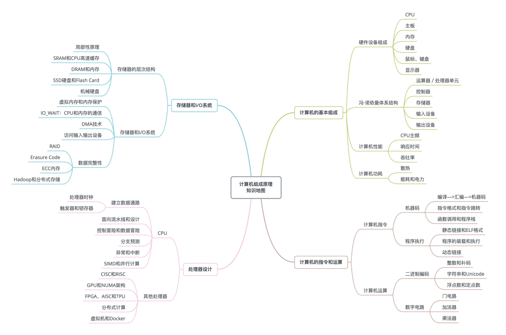
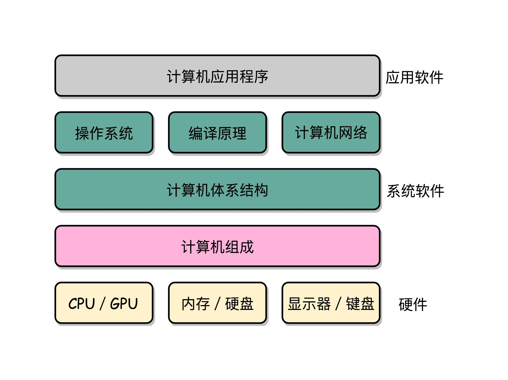
在硬件和软件之间需要一座桥梁，而 “计算机组成原理” 就扮演了这样一个角色，它既隔离了软件和硬件，也提供了让软件无需关心硬件，就能直接操作硬件的接口。¶
计算机组成原理: Computer Organization
南桥（SouthBridge）
北桥
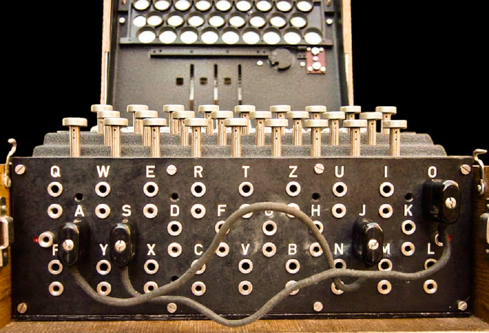
著名的 Engima Machine 就用到了 Plugboard 来进行 “编程”¶
一台计算机应该有哪些部分组成:
1. 一个处理器单元（Processing Unit）
包含算术逻辑单元（Arithmetic Logic Unit，ALU）和处理器寄存器（Processor Register）
用来完成各种算术和逻辑运算。
因为它能够完成各种数据的处理或者计算工作，因此也有人把这个叫作数据通路（Datapath）或者运算器
2. 一个控制器单元（Control Unit/CU）
包含指令寄存器（Instruction Register）和程序计数器（Program Counter）
用来控制程序的流程，通常就是不同条件下的分支和跳转。
在现在的计算机里，上面的算术逻辑单元和这里的控制器单元，共同组成了我们说的 CPU
3. 用来存储数据（Data）和指令（Instruction）的内存，以及更大容量的外部存储
外部存储在过去，可能是磁带、磁鼓这样的设备，现在通常就是硬盘
4. 各种输入和输出设备，以及对应的输入和输出机制
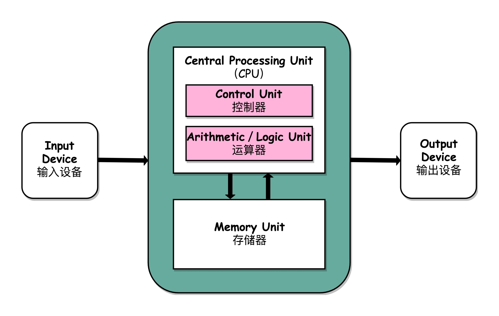
冯・诺依曼体系结构示意图¶
Note
具体来说，学习组成原理，其实就是 1. 学习控制器、运算器的工作原理，也就是 CPU 是怎么工作的，以及为何这样设计；2. 学习内存的工作原理，从最基本的电路，到上层抽象给到 CPU 乃至应用程序的接口是怎样的；3. 学习 CPU 是怎么和输入设备、输出设备打交道的。
论文: First Draft of a Report on the EDVAC
计算机行业的两大祖师爷，冯・诺依曼机、图灵（Alan Mathison Turing）
图灵机是一种思想模型（计算机的基本理论基础），是一种有穷的、构造性的问题的问题求解思路，图灵认为凡是能用算法解决的问题也一定能用图灵机解决；
冯诺依曼提出了 “存储程序” 的计算机设计思想，并 “参照” 图灵模型设计了历史上第一台电子计算机，即冯诺依曼机
图灵机是一个抽象的” 思维实验 “，而冯诺依曼机就是对应着这个” 思维实验 “的” 物理实现 “。相互之间颇有理论物理学家和实验物理学家的合作关系的意思，可谓是一个问题的一体两面。
哈弗结构算是冯诺依曼结构的一个特殊形式吧，把指令和数据分开存储，不过现在很少见有人提了。
计算机的性能衡量标准中主要有两个指标:
1. 响应时间（Response time）或者叫执行时间（Execution time）
2. 吞吐率（Throughput）或者带宽（Bandwidth）
time 命令。它会返回三个值，第一个是 real time，也就是我们说的 Wall Clock Time，也就是运行程序整个过程中流逝掉的时间；第二个是 user time，也就是 CPU 在运行你的程序，在用户态运行指令的时间；第三个是 sys time，是 CPU 在运行你的程序，在操作系统内核里运行指令的时间。而程序实际花费的 CPU 执行时间（CPU Time），就是 user time 加上 sys time:
$ time seq 1000000 | wc -l
1000000
real 0m0.101s
user 0m0.031s
sys 0m0.016s
程序的 CPU 执行时间 = CPU 时钟周期数 × 时钟周期时间
CPU 时钟周期数 = 指令数 × 每条指令的平均时钟周期数(CPI)
=>
程序的 CPU 执行时间 = 指令数 ×CPI×Clock Cycle Time
1. 时钟周期时间，就是计算机主频，这个取决于计算机硬件
2. 每条指令的平均时钟周期数 CPI，就是一条指令到底需要多少 CPU Cycle
现代的 CPU 通过流水线技术（Pipeline），让一条指令需要的 CPU Cycle 尽可能地少
对于 CPI 的优化，也是计算机组成和体系结构中的重要一环
3. 指令数，代表执行我们的程序到底需要多少条指令、用哪些指令
编译器做优化
从 1978 年 Intel 发布的 8086 CPU 开始，计算机的主频从 5MHz 开始，不断提升。1980 年代中期的 80386 能够跑到 40MHz，1989 年的 486 能够跑到 100MHz，直到 2000 年的奔腾 4 处理器，主频已经到达了 1.4GHz，2019 年的最高配置 Intel i9 CPU，主频也只不过是 5GHz 而已。相较于 1978 年到 2000 年，这 20 年里 300 倍的主频提升，从 2000 年到2019年的这 19 年，CPU 的主频大概提高了 3 倍。
在 “摩尔定律” 和 “并行计算” 之外，在整个计算机组成层面，还有这样几个原则性的性能提升方法:
1. 加速大概率事件
2. 通过流水线提高性能
3. 通过预测提高性能
指令和运算¶
纸带编程¶
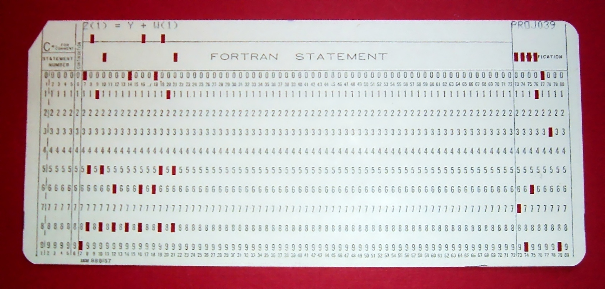
上世纪 60 年代晚期或 70 年代初期，Arnold Reinold 拍摄的 FORTRAN 计算程序的穿孔卡照片¶
一台 IBM 的 Plugboard Computer“插线板计算机”。在一个布满了各种插口和插座的板子上，工程师们用不同的电线来连接不同的插口和插座，从而来完成各种计算任务。¶
把对应的汇编代码和机器码都打印出来:
$ gcc -g -c test.c
$ objdump -d -M intel -S test.o
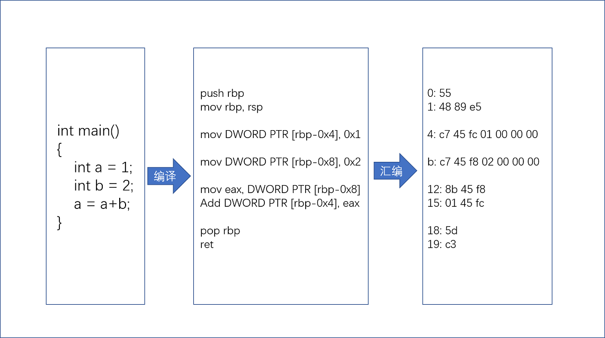
CPU 指令可以分成五大类:
1. 第一类是算术类指令。我们的加减乘除，在 CPU 层面，都会变成一条条算术类指令。
2. 第二类是数据传输类指令。给变量赋值、在内存里读写数据，用的都是数据传输类指令。
3. 第三类是逻辑类指令。逻辑上的与或非，都是这一类指令。
4. 第四类是条件分支类指令。日常我们写的 “if/else”，其实都是条件分支类指令。
5. 最后一类是无条件跳转指令。
MIPS 的指令是一个 32 位的整数，高 6 位叫操作码（Opcode），也就是代表这条指令具体是一条什么样的指令，剩下的 26 位有三种格式，分别是 R、I 和 J:
1. R 指令是一般用来做算术和逻辑操作，里面有读取和写入数据的寄存器的地址。
2. I 指令，则通常是用在数据传输、条件分支，以及在运算的时候使用的并非变量还是常数的时候。
3. J 指令就是一个跳转指令，高 6 位之外的 26 位都是一个跳转后的地址。
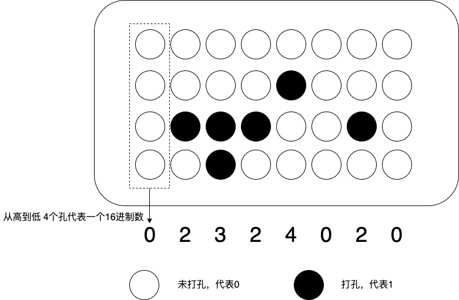
用打孔代表 1，没有打孔代表 0，用 4 行 8 列代表一条指令来打一个穿孔纸带，那么这条命令大概就长这样¶
寄存器¶
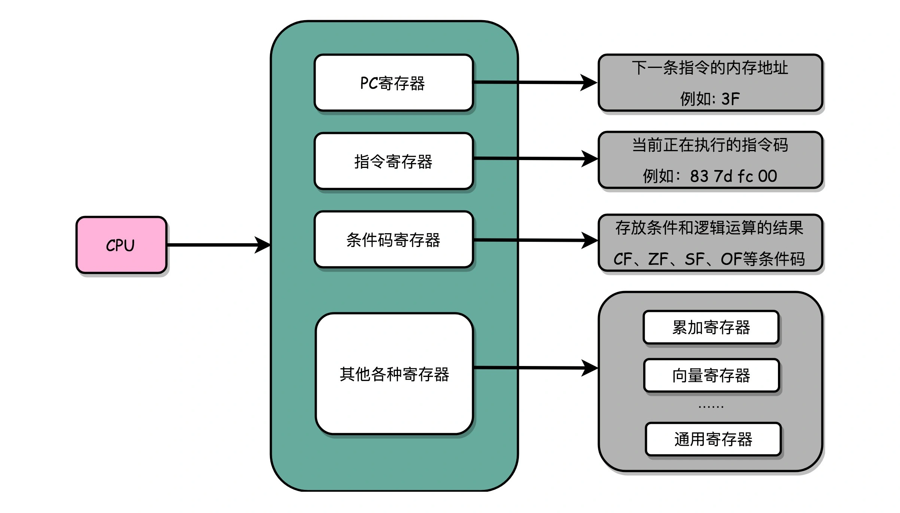
N 个触发器或者锁存器，就可以组成一个 N 位（Bit）的寄存器，能够保存 N 位的数据。比方说，我们用的 64 位 Intel 服务器，寄存器就是 64 位的。¶
一个 CPU 里面会有很多种不同功能的寄存器。我这里给你介绍三种比较特殊的:
1. PC 寄存器（Program Counter Register），也叫指令地址寄存器（Instruction Address Register）
顾名思义，它就是用来存放下一条需要执行的计算机指令的内存地址。
PC 寄存器还有一个名字，就叫作程序计数器
顾名思义，就是随着时间变化，不断去数数。数的数字变大了，就去执行一条新指令。
2. 指令寄存器（Instruction Register），用来存放当前正在执行的指令。
3. 条件码寄存器（Status Register），用里面的一个一个标记位（Flag），
存放 CPU 进行算术或者逻辑计算的结果。
还有更多用来存储数据和内存地址的寄存器。这样的寄存器通常一类里面不止一个:
我们通常根据存放的数据内容来给它们取名字，比如:
1. 整数寄存器
2. 浮点数寄存器
3. 向量寄存器
4. 地址寄存器
有些寄存器既可以存放数据，又能存放地址，我们就叫它通用寄存器。
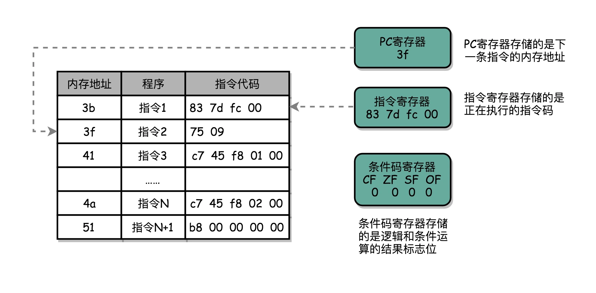
一个程序执行的时候，CPU 会根据 PC 寄存器里的地址，从内存里面把需要执行的指令读取到指令寄存器里面执行，然后根据指令长度自增，开始顺序读取下一条指令。可以看到，一个程序的一条条指令，在内存里面是连续保存的，也会一条条顺序加载。有些特殊指令，比如上一讲我们讲到 J 类指令，也就是跳转指令，会修改 PC 寄存器里面的地址值。这样，下一条要执行的指令就不是从内存里面顺序加载的了。¶
Note
核心在于理解几个寄存器的作用，从而理解 cpu 运行程序的过程：cpu 从 PC 寄存器中取地址，找到地址对应的内存位子，取出其中指令送入指令寄存器执行，然后指令自增，重复操作。所以只要程序在内存中是连续存储的，就会顺序执行这也是冯诺依曼体系的理念吧。而实际上跳转指令就是当前指令修改了当前 PC 寄存器中所保存的下一条指令的地址，从而实现了跳转。当然各个寄存器实际上是由数电中的一个一个门电路组合出来的，而各个门电路的具体电路形式也是属于模电的东西
汇编¶
C源码:
int main()
{
srand(time(NULL));
int r = rand() % 2;
int a = 10;
if (r == 0)
{
a = 1;
} else {
a = 2;
}
}
执行命令:
$ gcc -g -c test.c
$ objdump -d -M intel -S test.o
生成汇编:
if (r == 0)
3b: 83 7d fc 00 cmp DWORD PTR [rbp-0x4],0x0
3f: 75 09 jne 4a <main+0x4a>
{
a = 1;
41: c7 45 f8 01 00 00 00 mov DWORD PTR [rbp-0x8],0x1
48: eb 07 jmp 51 <main+0x51>
}
else
{
a = 2;
4a: c7 45 f8 02 00 00 00 mov DWORD PTR [rbp-0x8],0x2
51: b8 00 00 00 00 mov eax,0x0
}
可以看到，这里对于 r == 0 的条件判断，被编译成了 cmp 和 jne 这两条指令。 cmp 指令比较了前后两个操作数的值，这里的 DWORD PTR 代表操作的数据类型是 32 位的整数，而 [rbp-0x4] 则是变量 r 的内存地址。所以，第一个操作数就是从内存里拿到的变量 r 的值。第二个操作数 0x0 就是我们设定的常量 0 的 16 进制表示。cmp 指令的比较结果，会存入到条件码寄存器当中去。 在这里，如果比较的结果是 True，也就是 r == 0，就把零标志条件码（对应的条件码是 ZF，Zero Flag）设置为 1。除了零标志之外，Intel 的 CPU 下还有进位标志（CF，Carry Flag）、符号标志（SF，Sign Flag）以及溢出标志（OF，Overflow Flag），用在不同的判断条件下。 cmp 指令执行完成之后，PC 寄存器会自动自增，开始执行下一条 jne 的指令。 跟着的 jne 指令，是 jump if not equal 的意思，它会查看对应的零标志位。如果为 0，会跳转到后面跟着的操作数 4a 的位置。这个 4a，对应这里汇编代码的行号，也就是上面设置的 else 条件里的第一条指令。当跳转发生的时候，PC 寄存器就不再是自增变成下一条指令的地址，而是被直接设置成这里的 4a 这个地址。这个时候，CPU 再把 4a 地址里的指令加载到指令寄存器中来执行。 跳转到执行地址为 4a 的指令，实际是一条 mov 指令，第一个操作数和前面的 cmp 指令一样，是另一个 32 位整型的内存地址，以及 2 的对应的 16 进制值 0x2。mov 指令把 2 设置到对应的内存里去，相当于一个赋值操作。然后，PC 寄存器里的值继续自增，执行下一条 mov 指令。 这条 mov 指令的第一个操作数 eax，代表累加寄存器，第二个操作数 0x0 则是 16 进制的 0 的表示。这条指令其实没有实际的作用，它的作用是一个占位符。我们回过头去看前面的 if 条件，如果满足的话，在赋值的 mov 指令执行完成之后，有一个 jmp 的无条件跳转指令。跳转的地址就是这一行的地址 51。我们的 main 函数没有设定返回值，而 mov eax, 0x0 其实就是给 main 函数生成了一个默认的为 0 的返回值到累加器里面。if 条件里面的内容执行完成之后也会跳转到这里，和 else 里的内容结束之后的位置是一样的。
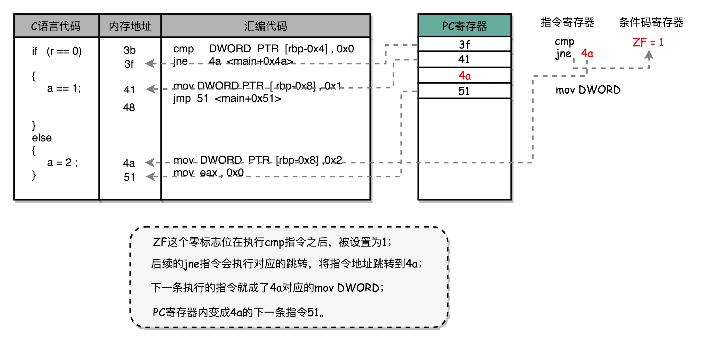
stack¶
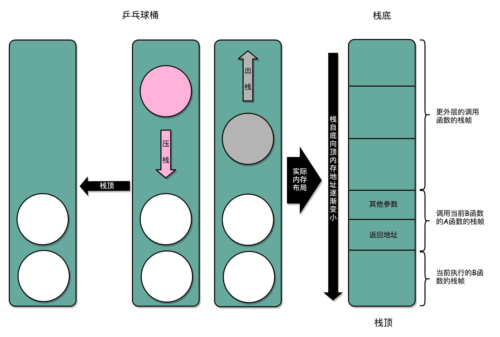
实际的程序栈布局，底在最上面，顶在最下面，这样的布局是因为栈底的内存地址是在一开始就固定的。而一层层压栈之后，栈顶的内存地址是在逐渐变小而不是变大。¶
https://blog.holbertonschool.com/hack-virtual-memory-stack-registers-assembly-code/
汇编指令操作栈的步骤一步步画: https://manybutfinite.com/post/journey-to-the-stack/
How Stacks are Handled in Go: https://blog.cloudflare.com/how-stacks-are-handled-in-go/
How Stacks are Handled in Go: https://studygolang.com/topics/491
ELF 与静态链接¶
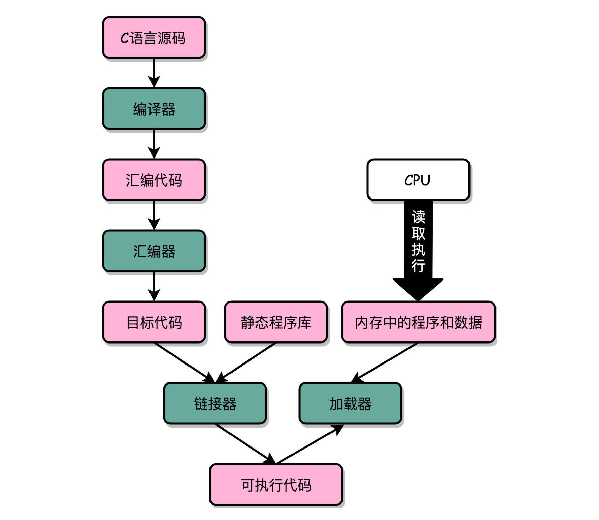
“C 语言代码 - 汇编代码 - 机器码” 这个过程，在我们的计算机上进行的时候是由两部分组成的。第一个部分由编译（Compile）、汇编（Assemble）以及链接（Link）三个阶段组成。在这三个阶段完成之后，我们就生成了一个可执行文件。第二部分，我们通过装载器（Loader）把可执行文件装载（Load）到内存中。CPU 从内存中读取指令和数据，来开始真正执行程序。¶
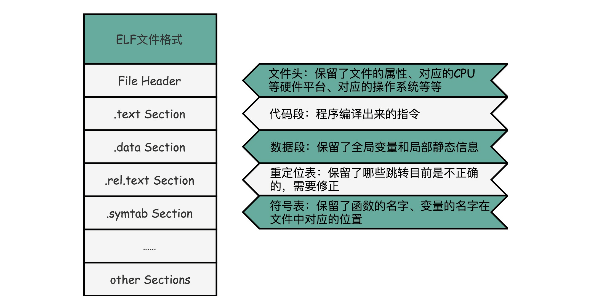
ELF 文件格式把各种信息，分成一个一个的 Section 保存起来。ELF 有一个基本的文件头（File Header），用来表示这个文件的基本属性，比如是否是可执行文件，对应的 CPU、操作系统等等¶
除了这些基本属性之外，大部分程序还有这么一些 Section:
1. 首先是.text Section，也叫作代码段或者指令段（Code Section），用来保存程序的代码和指令；
2. 接着是.data Section，也叫作数据段（Data Section），用来保存程序里面设置好的初始化数据信息；
3. 然后就是.rel.text Secion，叫作重定位表（Relocation Table）。
重定位表里，保留的是当前的文件里面，哪些跳转地址其实是我们不知道的。
在链接发生之前，我们并不知道该跳转到哪里，这些信息就会存储在重定位表里；
4. 最后是.symtab Section，叫作符号表（Symbol Table）。符号表保留了我们所说的当前文件里面定义的函数名称和对应地址的地址簿。
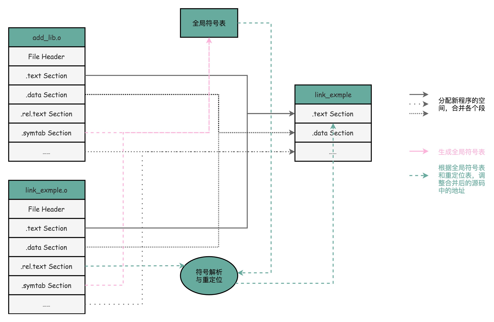
链接器会扫描所有输入的目标文件，然后把所有符号表里的信息收集起来，构成一个全局的符号表。然后再根据重定位表，把所有不确定要跳转地址的代码，根据符号表里面存储的地址，进行一次修正。最后，把所有的目标文件的对应段进行一次合并，变成了最终的可执行代码。这也是为什么，可执行文件里面的函数调用的地址都是正确的。¶
ELF
PE
Wine
WSL
命令:
$ readelf -s link_example.o //查看符号表
$ objdump -r link_example.o //查看重定位表
装载器¶
装载器需要满足两个要求:
第一，可执行程序加载后占用的内存空间应该是连续的
第二，我们需要同时加载很多个程序，并且不能让程序自己规定在内存中加载的位置
虚拟内存地址（Virtual Memory Address）
物理内存地址（Physical Memory Address）
内存碎片（Memory Fragmentation）
内存交换（Memory Swapping）
内存分页（Paging）
全局符号表是虚拟内存内的内存寻址和跳转。
页表是虚拟内存和物理内存之间的映射关系。
内存分段: 找出一段连续的物理内存和虚拟内存地址进行映射的方法，我们叫分段（Segmentation）。这里的段，就是指系统分配出来的那个连续的内存空间。¶
Note
和分段这样分配一整段连续的空间给到程序相比，分页是把整个物理内存空间切成一段段固定尺寸的大小。而对应的程序所需要占用的虚拟内存空间，也会同样切成一段段固定尺寸的大小。这样一个连续并且尺寸固定的内存空间，我们叫页（Page）。从虚拟内存到物理内存的映射，不再是拿整段连续的内存的物理地址，而是按照一个一个页来的。页的尺寸一般远远小于整个程序的大小。在 Linux 下，我们通常只设置成 4KB。
Linux 系统设置的页的大小:
$ getconf PAGE_SIZE
Note
由于内存空间都是预先划分好的，也就没有了不能使用的碎片，而只有被释放出来的很多 4KB 的页。即使内存空间不够，需要让现有的、正在运行的其他程序，通过内存交换释放出一些内存的页出来，一次性写入磁盘的也只有少数的一个页或者几个页，不会花太多时间，让整个机器被内存交换的过程给卡住。
更进一步地，分页的方式使得我们在加载程序的时候，不再需要一次性都把程序加载到物理内存中。我们完全可以在进行虚拟内存和物理内存的页之间的映射之后，并不真的把页加载到物理内存里，而是只在程序运行中，需要用到对应虚拟内存页里面的指令和数据时，再加载到物理内存里面去。
实际上，我们的操作系统，的确是这么做的。当要读取特定的页，却发现数据并没有加载到物理内存里的时候，就会触发一个来自于 CPU 的缺页错误（Page Fault）。我们的操作系统会捕捉到这个错误，然后将对应的页，从存放在硬盘上的虚拟内存里读取出来，加载到物理内存里。这种方式，使得我们可以运行那些远大于我们实际物理内存的程序。同时，这样一来，任何程序都不需要一次性加载完所有指令和数据，只需要加载当前需要用到就行了。
Note
通过虚拟内存、内存交换和内存分页这三个技术的组合，我们最终得到了一个让程序不需要考虑实际的物理内存地址、大小和当前分配空间的解决方案。这些技术和方法，对于我们程序的编写、编译和链接过程都是透明的。这也是我们在计算机的软硬件开发中常用的一种方法，就是加入一个间接层。
Note
通过引入虚拟内存、页映射和内存交换，我们的程序本身，就不再需要考虑对应的真实的内存地址、程序加载、内存管理等问题了。任何一个程序，都只需要把内存当成是一块完整而连续的空间来直接使用。
动态链接¶
动态链接（Dynamic Link）
静态链接（Static Link）
共享库（Shared Libraries）
地址无关码（Position-Independent Code）
相对地址（Relative Address）
PLT: Procedure Link Table(程序链接表)
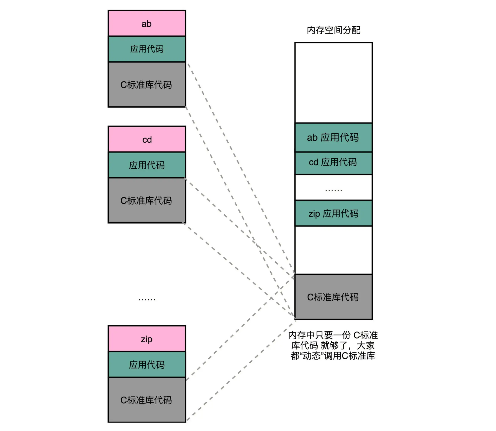
两方面的含义：一个是 “动态链接” ，另一个是 “共享”¶
$ gcc lib.c -fPIC -shared -o lib.so
$ gcc -o show_me_poor show_me_poor.c ./lib.so
说明:
-fPIC: 编译成一个地址无关代码
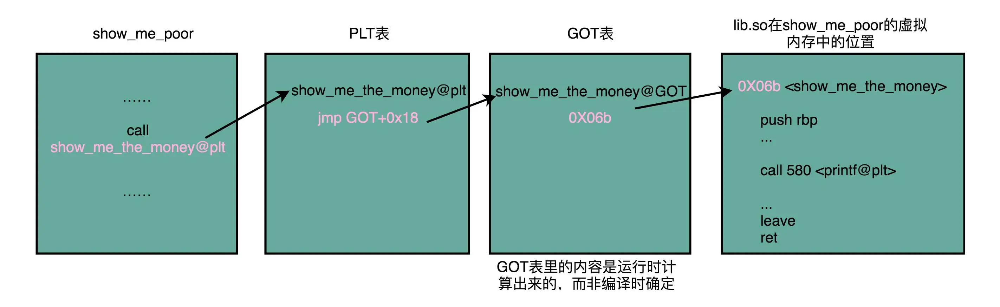
虽然不同的程序调用的同样的动态库，各自的内存地址是独立的，调用的又都是同一个动态库，但是不需要去修改动态库里面的代码所使用的地址，而是各个程序各自维护好自己的 GOT，能够找到对应的动态库就好了。使用动态链接的话，每个程序都维护一张GOT表。¶
Note
为什么要采用 PLT 和 GOT 两级跳转，直接用 GOT 有问题吗？PLT 是为了做延迟绑定，如果函数没有实际被调用到，就不需要更新 GOT 里面的数值。因为很多动态装载的函数库都是不会被实际调用到的。
二进制编码¶
字符集（Charset）和字符编码（Character Encoding）
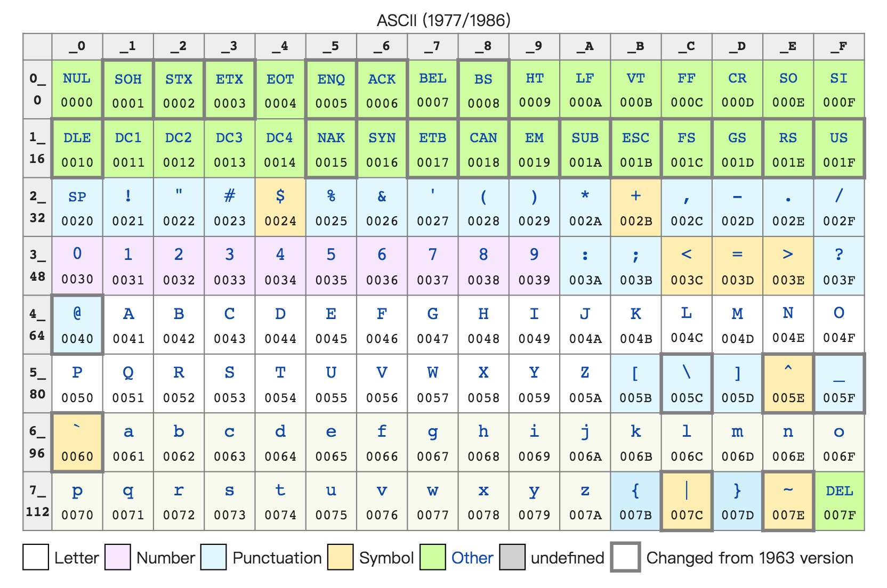
ASCII 码: 最大的 32 位整数，就是 2147483647。如果用整数表示法，只需要 32 位就能表示了。但是如果用字符串来表示，一共有 10 个字符，每个字符用 8 位的话，需要整整 80 位。比起整数表示法，要多占很多空间。不管是整数也好，浮点数也好，采用二进制序列化会比存储文本省下不少空间。¶
Unicode 是一个字符集，包含了 150 种语言的 14 万个不同的字符。
字符编码则是对于字符集里的这些字符，怎么一一用二进制表示出来的一个字典。如： Unicode，就可以用 UTF-8、UTF-16，乃至 UTF-32 来进行编码，存储成二进制。
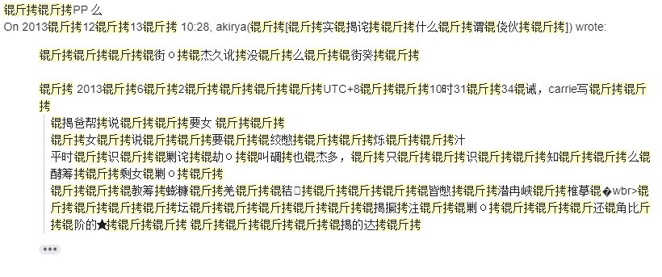
在中文世界里，最典型的就是“手持两把锟斤拷，口中疾呼烫烫烫”的典故。“锟斤拷”和“烫烫烫”的来龙去脉：1. “锟斤拷”的来源是这样的。如果我们想要用 Unicode 编码记录一些文本，特别是一些遗留的老字符集内的文本，但是这些字符在 Unicode 中可能并不存在。于是，Unicode 会统一把这些字符记录为 U+FFFD 这个编码。如果用 UTF-8 的格式存储下来，就是xefxbfxbd。如果连续两个这样的字符放在一起，xefxbfxbdxefxbfxbd，这个时候，如果程序把这个字符，用 GB2312 的方式进行 decode，就会变成“锟斤拷”。 2. “烫烫烫”，则是因为如果你用了 Visual Studio 的调试器，默认使用 MBCS 字符集。“烫”在里面是由 0xCCCC 来表示的，而 0xCC 又恰好是未初始化的内存的赋值。于是，在读到没有赋值的内存地址或者变量的时候，电脑就开始大叫“烫烫烫”了。参考: https://stackoverflow.com/questions/6276681/what-characters-are-not-present-in-unicode¶
电路¶
继电器（Relay）
反向器（Inverter）
电报传输的信号有两种:
1. 一种是短促的点信号（dot 信号）
2. 一种是长一点的划信号（dash 信号）
把“点”当成“1”，把“划”当成“0”
例:
电影里最常见的电报信号是“SOS”，这个信号表示出来就是 “点点点划划划点点点”
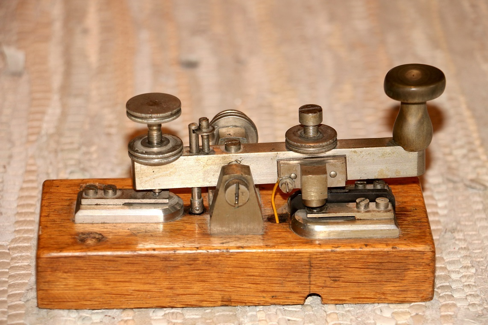
一个摩尔斯电码的电报机¶
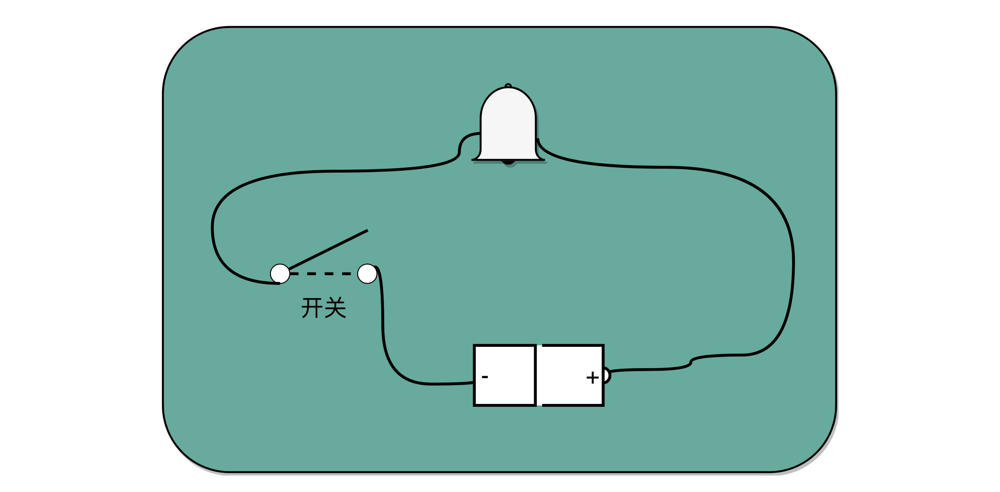
有了电池开关和铃铛，你就有了最简单的摩尔斯电码发报机。制造一台电报机也非常容易。电报机本质上就是一个“蜂鸣器 + 长长的电线 + 按钮开关”。蜂鸣器装在接收方手里，开关留在发送方手里。双方用长长的电线连在一起。¶
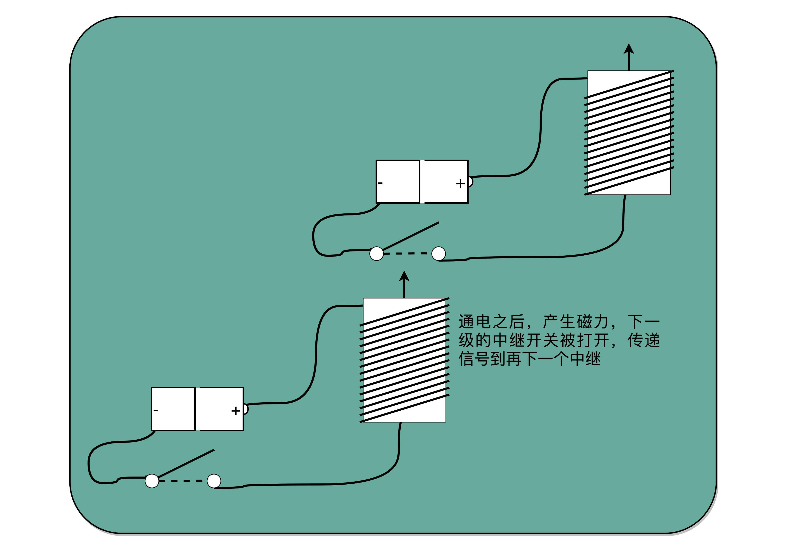
为了能够实现接力传输信号，在电路里面，工程师们造了一个叫作继电器（Relay）的设备。中继，其实就是不断地通过新的电源重新放大已经开始衰减的原有信号¶
加法器¶
半加器（Half Adder）
全加器（Full Adder）
组合电路套件(淘宝上买)
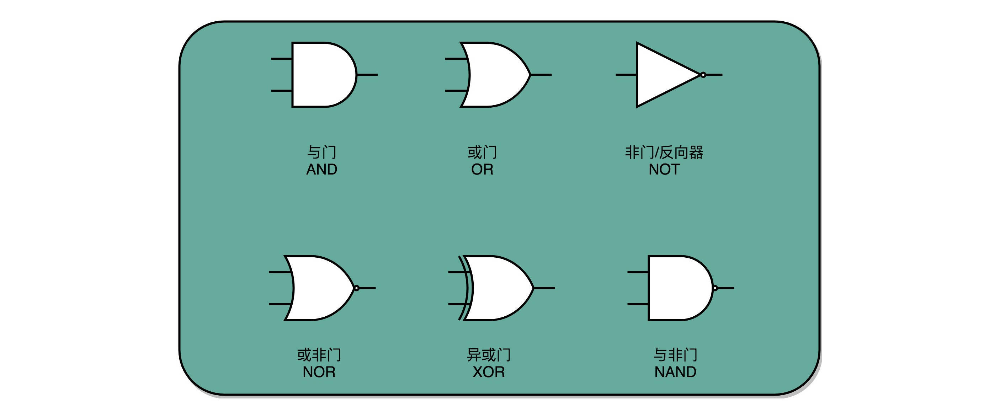
在计算机硬件层面设计最基本的单元，门电路¶
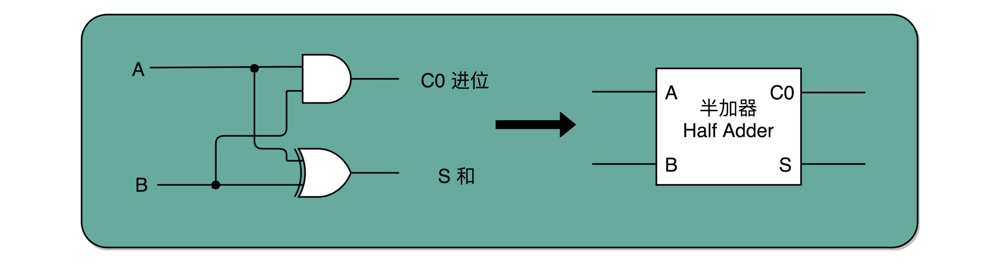
通过一个异或门计算出个位，通过一个与门计算出是否进位，我们就通过电路算出了一个一位数的加法。于是，我们把两个门电路打包，给它取一个名字，就叫作半加器（Half Adder）。¶
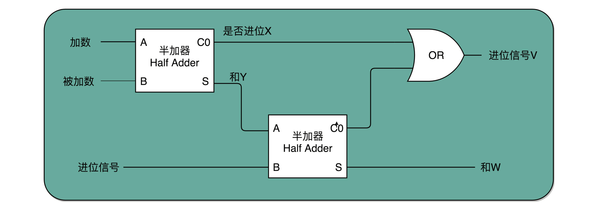
全加器就是两个半加器加上一个或门¶
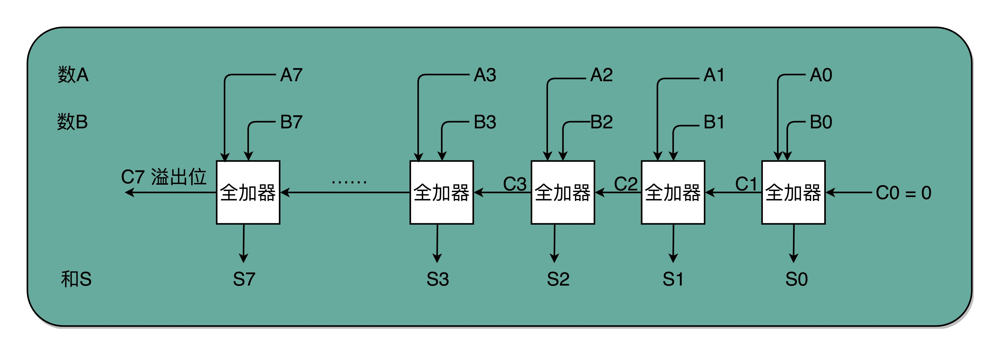
8 位加法器可以由 8 个全加器串联而成¶
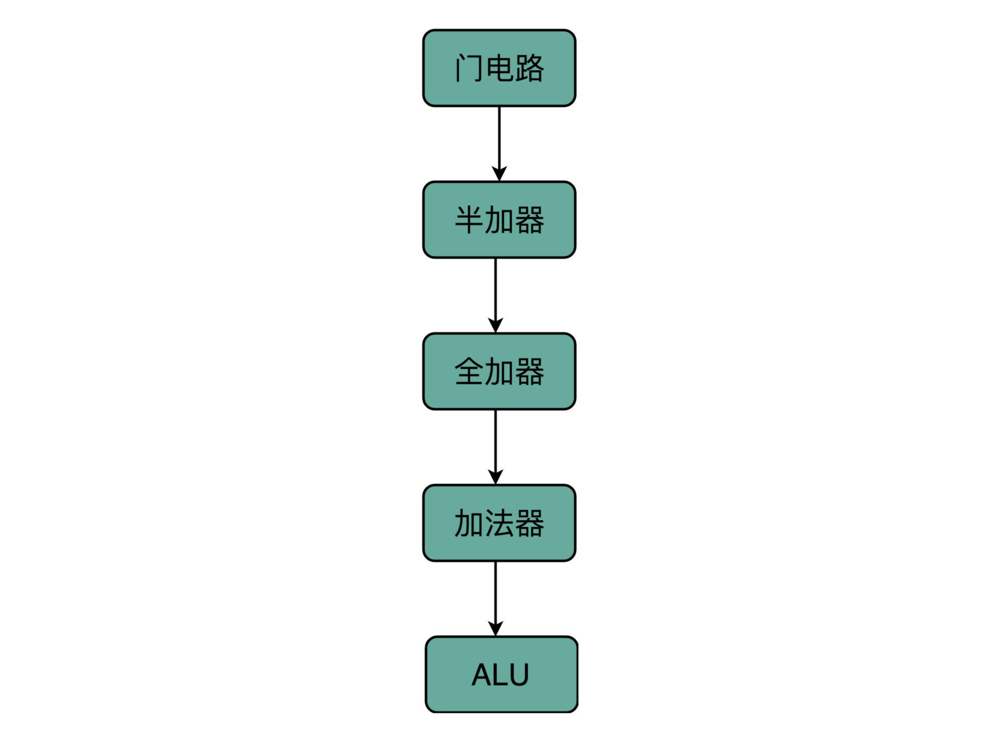
计算机中，无论软件还是硬件中一个很重要的设计思想，分层。从简单到复杂，我们一层层搭出了拥有更强能力的功能组件。在上面的一层，我们只需要考虑怎么用下一层的组件搭建出自己的功能，而不需要下沉到更低层的其他组件。¶
Note
出于性能考虑，实际 CPU 里面使用的加法器，比起我们今天讲解的电路还有些差别，会更复杂一些。真实的加法器，使用的是一种叫作超前进位加法器的东西。实际的加法器，并不是由全加器串联组成的，实际高位的计算结果直接来自低位的组合电路里面的输入。封装意味着我们提供了更多的“简单电路”或者说“简单指令”来操作。但这也意味着同样复杂的操作需要更多条指令。可以像人一样，逐位计算，但线性带来时间复杂度高。从而可以考虑通过增加线路 / 硬件复杂度，从空间换时间的思路，加快乘法速度。但 CPU 毕竟也是很珍贵的资源，晶体管也不宜太多，这中间需要相互平衡。这个也是为什么在计算机体系结构里面会有 RISC 和 CISC 这样的复杂/精简 指令之争最朴素的由来。
乘法器¶
门延迟（Gate Delay）
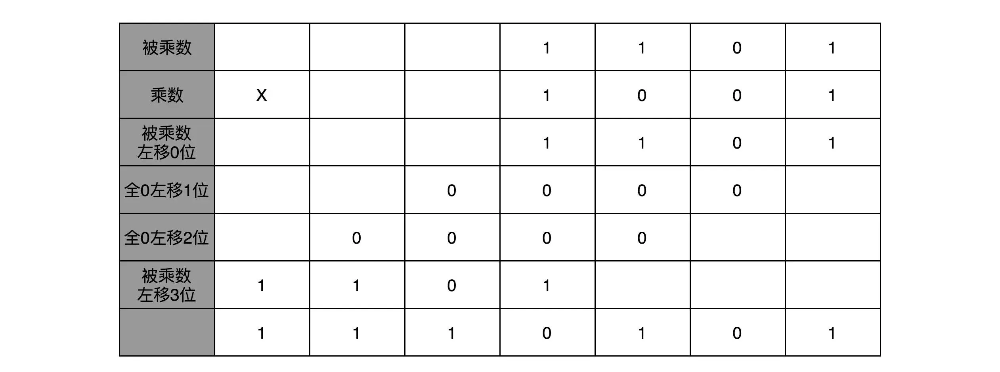
在 13×9 这个例子里面，被乘数 13 表示成二进制是 1101，乘数 9 在二进制里面是 1001。最右边的个位是 1，所以个位乘以被乘数，就是把被乘数 1101 复制下来。因为二位和四位都是 0，所以乘以被乘数都是 0，那么保留下来的都是 0000。乘数的八位是 1，我们仍然需要把被乘数 1101 复制下来。不过这里和个位位置的单纯复制有一点小小的差别，那就是要把复制好的结果向左侧移三位，然后把四位单独进行乘法加位移的结果，再加起来，我们就得到了最终的计算结果。¶
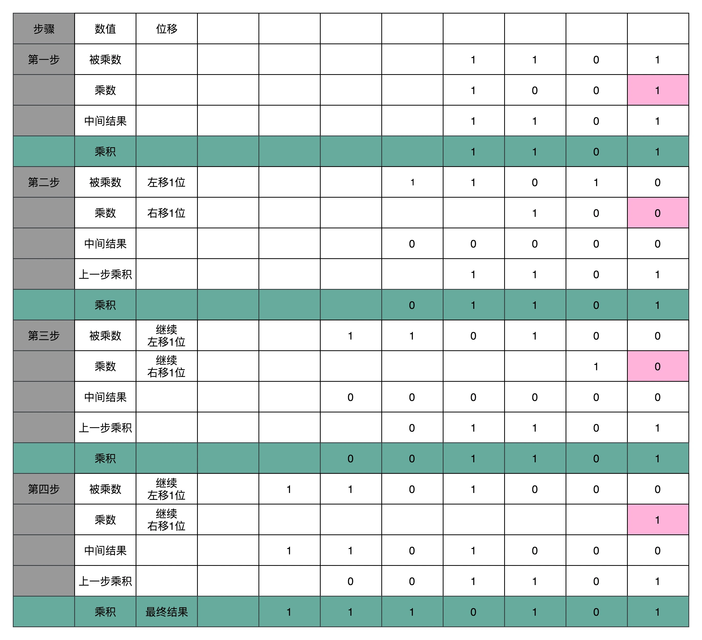
顺序乘法有一个很大的缺点，那就是慢。在这个乘法器的实现过程里，我们其实就是把乘法展开，变成了 “加法 + 位移” 来实现。因为下一组的加法要依赖上一组的加法后的计算结果，下一组的位移也要依赖上一组的位移的结果。这样，整个算法是 “顺序” 的，每一组加法或者位移的运算都需要一定的时间。¶
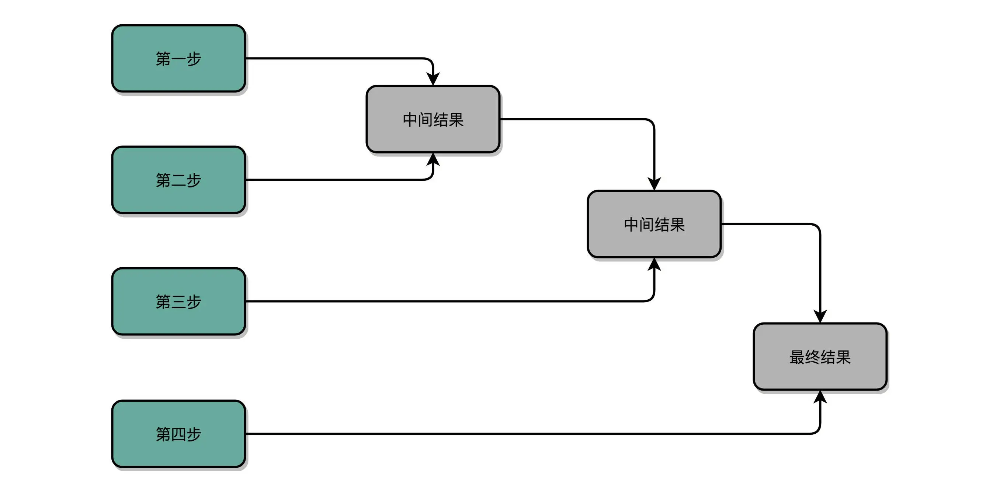
1.顺序乘法：实现就像是单败淘汰赛¶
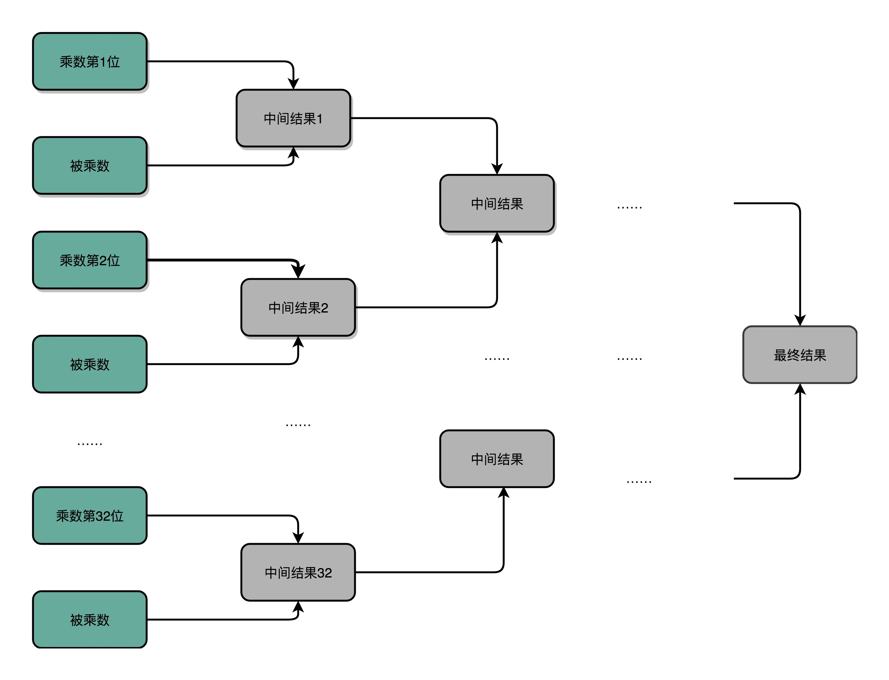
2.通过并联更多的 ALU，加上更多的寄存器，我们也能加速乘法。这种的复杂度是 O(log2N)¶
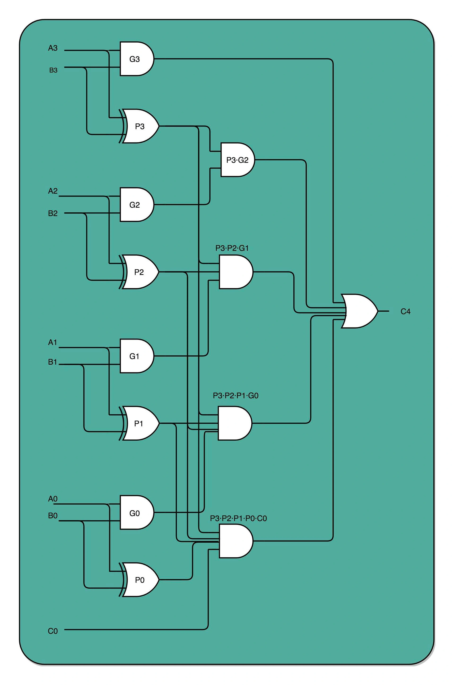
3.电路并行方案：C4 是前 4 位的计算结果是否进位的门电路表示。这个优化，本质上是利用了电路天然的并行性。电路只要接通，输入的信号自动传播到了所有接通的线路里面，这其实也是硬件和软件最大的不同。¶
定点数&浮点数¶
浮点数公式:
说明:
s: 符号位, 用来表示是正数还是负数
f: 有效数位, 23 个比特
e: 指数位, 8 个比特
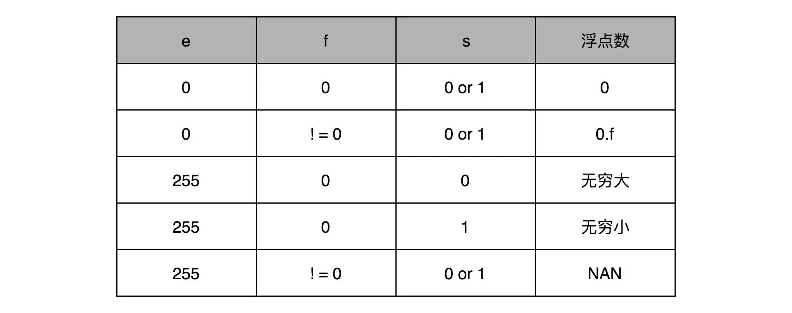
可以表示出无穷大、无穷小、NAN 以及一个特殊的不规范数¶
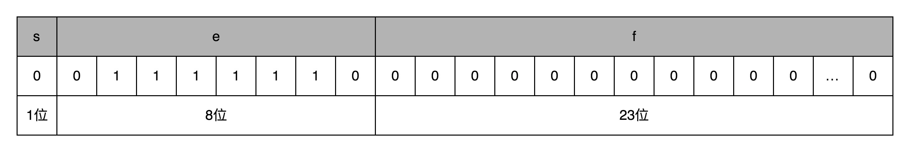
以 0.5 为例子。0.5 的符号为 s 应该是 0，f 应该是 0，而 e 应该是 -1，也就是0.5=(−1)^0 × 1.0 × 2^−1 = 0.5，对应的浮点数表示，就是 32 个比特。s=0，e=-1: 需要注意，e 表示从 -126 到 127 个，-1 是其中的第 126 个数，这里的 e 如果用整数表示，就是 2^6 +2^5 +2^4 +2^3 +2^2 +2^1=126，1.f=1.0。在这样的浮点数表示下，不考虑符号的话，浮点数能够表示的最小的数和最大的数，差不多是 1.17×10^−38 和 3.40×10^38¶
例:
表示成二进制就是 1.11111... ^(2^127)
差不多就是 1.9999999 ^(2^127)
差不多正好是 3.4028235 x (10 ^ 38)
最小的数就是 1.000..... ^ (2^-126)
差不多就是 1.0000 ^ (2^-126)
差不多正好就是 1.17549435 x (10^-38)
和整数的二进制表示采用 “除以 2，然后看余数” 的方式相比，小数部分转换成二进制是用一个相似的反方向操作，就是乘以 2，然后看看是否超过 1。如果超过 1，我们就记下 1，并把结果减去 1，进一步循环操作。¶
Note
32 位浮点数的有效位长度一共只有 23 位，如果两个数的指数位差出 23 位，较小的数右移 24 位之后，所有的有效位就都丢失了。例：用一个循环相加 2000 万个 1.0f，最终的结果会是 1600 万左右，而不是 2000 万。这是因为，加到 1600 万之后的加法因为精度丢失都没有了。用 Kahan Summation 的算法来解决这个问题。
Note
Kahan Summation 算法 原理其实并不复杂，就是在每次的计算过程中，都用一次减法，把当前加法计算中损失的精度记录下来，然后在后面的循环中，把这个精度损失放在要加的小数上，再做一次运算。
处理器¶
数据通路¶
指令周期（Instruction Cycle）
组合逻辑元件（Combinational Element）
状态元件（State Element）
锁存器（Latch）
组合逻辑电路（Combinational Logic Circuit）
时序逻辑电路（Sequential Logic Circuit）
反馈电路（Feedback Circuit）
反相器（Inverter）
触发器（Flip-Flop）
D 触发器（Data/Delay Flip-flop）
复位置位触发器（Reset-Set Flip Flop)
计算机每执行一条指令的过程，可以分解成这样几个步骤:
1. Fetch（取得指令）
也就是从 PC 寄存器里找到对应的指令地址，
根据指令地址从内存里把具体的指令，加载到指令寄存器中
然后把 PC 寄存器自增，好在未来执行下一条指令。
2. Decode（指令译码）
就是根据指令寄存器里面的指令，解析成要进行什么样的操作，
是 R、I、J 中的哪一种指令，具体要操作哪些寄存器、数据或者内存地址。
3. Execute（执行指令）
也就是实际运行对应的 R、I、J 这些特定的指令，
进行算术逻辑操作、数据传输或者直接的地址跳转。
4. 重复进行 1～3 的步骤。
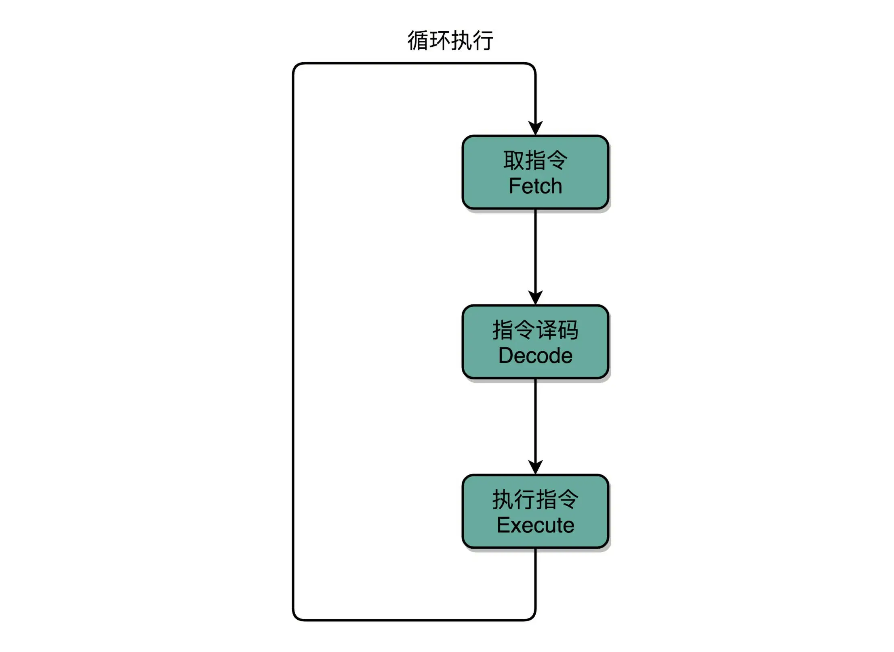
指令周期（Instruction Cycle）: 执行命令的过程其实就是一个永不停歇的 “Fetch - Decode - Execute” 的循环，我们把这个循环称之为指令周期（Instruction Cycle）¶
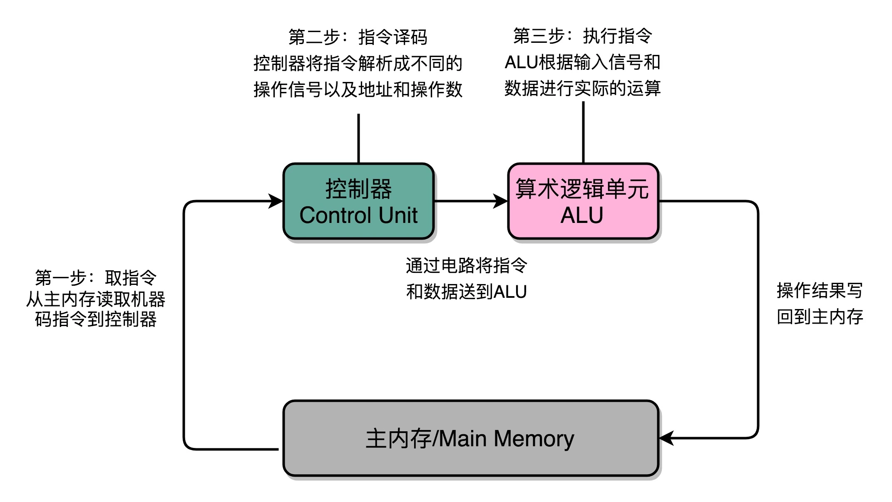
不同步骤在不同组件之内完成：在取指令的阶段，我们的指令是放在存储器里的，实际上，通过 PC 寄存器和指令寄存器取出指令的过程，是由控制器（Control Unit）操作的。指令的解码过程，也是由控制器进行的。一旦到了执行指令阶段，无论是进行算术操作、逻辑操作的 R 型指令，还是进行数据传输、条件分支的 I 型指令，都是由算术逻辑单元（ALU）操作的，也就是由运算器处理的。不过，如果是一个简单的无条件地址跳转，那么我们可以直接在控制器里面完成，不需要用到运算器。¶
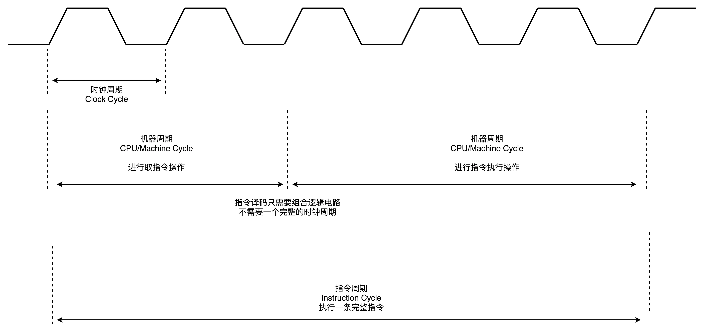
1.Clock Cycle(时钟周期)，我们机器的主频。 2.Machine Cycle(机器周期或 CPU 周期)。CPU 内部的操作速度很快，但是访问内存的速度却要慢很多。每一条指令都需要从内存里面加载而来，所以我们一般把从内存里面读取一条指令的最短时间，称为 CPU 周期。 3.Instruction Cycle(指令周期)对于一个指令周期来说，我们取出一条指令，然后执行它，至少需要两个 CPU 周期。取出指令至少需要一个 CPU 周期，执行至少也需要一个 CPU 周期，复杂的指令则需要更多的 CPU 周期。¶
数据通路就是我们的处理器单元。它通常由两类原件组成:
1. 操作元件，也叫组合逻辑元件（Combinational Element），其实就是我们的 ALU
2. 存储元件，也叫状态元件（State Element）。
如我们在计算过程中需要用到的寄存器，无论是通用寄存器还是状态寄存器，其实都是存储元件
3. 通过数据总线的方式，把它们连接起来，就可以完成数据的存储、处理和传输了，这就是所谓的建立数据通路
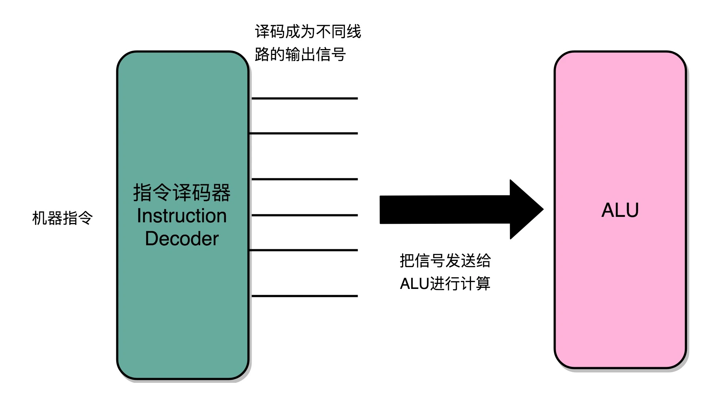
指令译码器将输入的机器码，解析成不同的操作码和操作数，然后传输给 ALU 进行计算¶
要想搭建出来整个 CPU,需要 4 种基本电路:
1. ALU 这样的组合逻辑电路
2. 用来存储数据的锁存器和 D 触发器电路
3. 用来实现 PC 寄存器的计数器电路
4. 用来解码和寻址的译码器电路
组合逻辑电路: 只需要给定输入，就能得到固定的输出
时序逻辑电路解决这样几个问题:
1. 自动运行的问题。时序电路接通之后可以不停地开启和关闭开关，进入一个自动运行的状态。这个使得我们上一讲说的，控制器不停地让 PC 寄存器自增读取下一条指令成为可能 2. 存储的问题。通过时序电路实现的触发器，能把计算结果存储在特定的电路里面，而不是像组合逻辑电路那样，一旦输入有任何改变，对应的输出也会改变。 3. 本质上解决了各个功能按照时序协调的问题。无论是程序实现的软件指令，还是到硬件层面，各种指令的操作都有先后的顺序要求。时序电路使得不同的事件按照时间顺序发生。
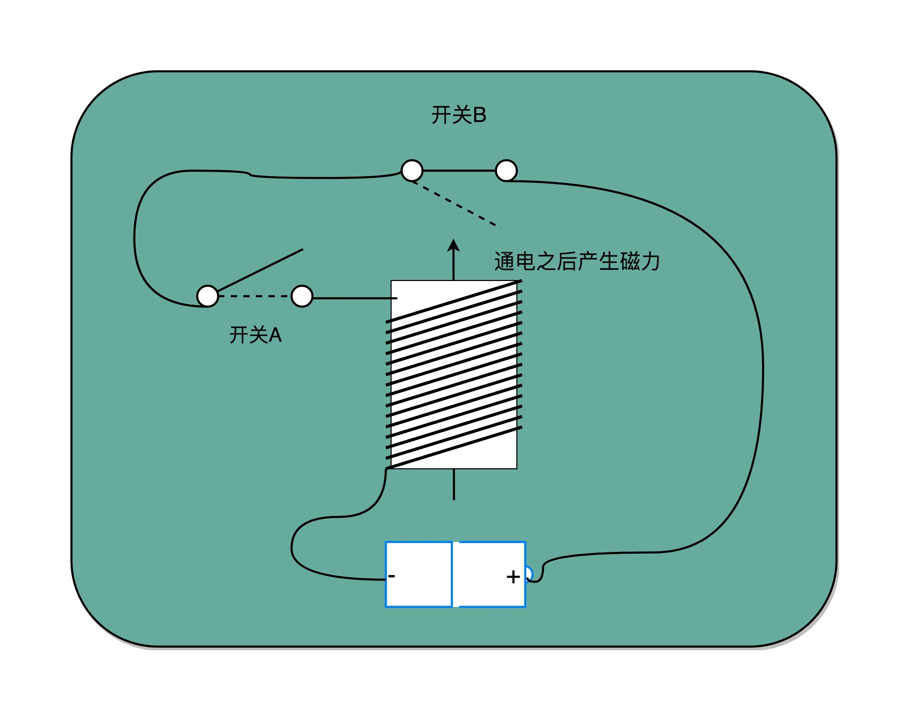
开关 A 闭合（也就是相当于接通电路之后），开关 B 就会不停地在开和关之间切换，生成对应的时钟信号。这个不断切换的过程，对于下游电路来说，就是不断地产生新的 0 和 1 这样的信号。这个按照固定的周期不断在 0 和 1 之间切换的信号，就是我们的时钟信号（Clock Signal）。¶
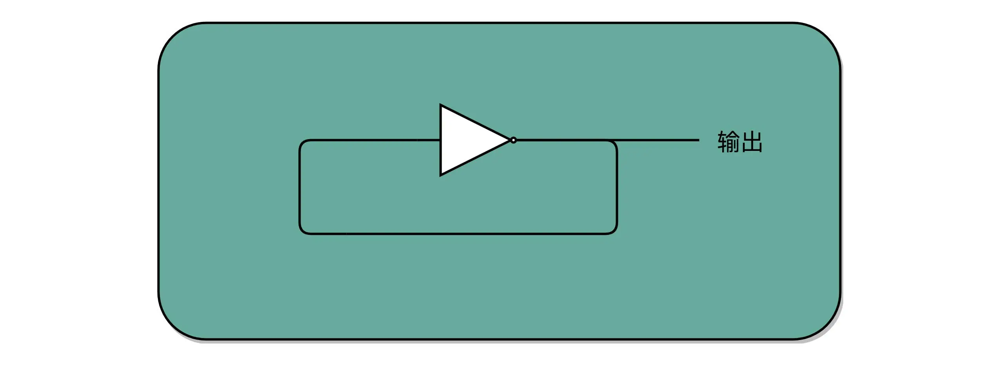
把电路的输出信号作为输入信号，再回到当前电路。这样的电路构造方式呢，我们叫作反馈电路（Feedback Circuit）。如：通过一个反相器实现时钟信号¶

RS 触发器电路：最简单的 RS 触发器，也就是所谓的复位置位触发器（Reset-Set Flip Flop) 。接通开关 R，输出变为 1，即使断开开关，输出还是 1 不变。接通开关 S，输出变为 0，即使断开开关，输出也还是 0。也就是，当两个开关都断开的时候，最终的输出结果，取决于之前动作的输出结果，这个也就是我们说的记忆功能。¶

通过一个时钟信号，我们可以在特定的时间对输出的 Q 进行写入操作¶

把 R 和 S 两个信号通过一个反相器合并，我们可以通过一个数据信号 D 进行 Q 的写入操作。一个 D 型触发器，只能控制 1 个比特的读写，但是如果我们同时拿出多个 D 型触发器并列在一起，并且把用同一个 CLK 信号控制作为所有 D 型触发器的开关，这就变成了一个 N 位的 D 型触发器，也就可以同时控制 N 位的读写。¶
书籍¶
入门书籍¶
《计算机是怎样跑起来的》
《程序是怎样跑起来的》
Coursera 上的北京大学免费公开课《Computer Organization》:
硬件层面的基础实现，比如寄存器、ALU 这些电路
深入学习书籍¶
《计算机组成与设计：硬件 / 软件接口》
经典的CSAPP《深入理解计算机系统》
视频课程: Bilibili 版和 Youtube 版
辅助的参考书: 操作系统大神塔能鲍姆（Andrew S. Tanenbaum）的《计算机组成：结构化方法》
课外阅读¶
Redhat 的 What Every Programmer Should Know About Memory 是写出高性能程序不可不读的经典材料
LMAX 开源的 Disruptor，则是通过实际应用程序，来理解计算机组成原理中各个知识点的最好范例
理解计算机硬件和操作系统层面代码执行的优秀阅读材料: * 《编码：隐匿在计算机软硬件背后的语言》 * 《程序员的自我修养：链接、装载和库》是
CSAPP-深入理解计算机系统¶
可以仔细读一下《深入理解计算机系统（第三版）》的 3.7 小节《过程》，进一步了解函数调用是怎么回事
编码：隐匿在计算机软硬件背后的语言¶
关于二进制和编码，我推荐你读一读这本书。从电报机到计算机，这本书讲述了很多计算设备的历史故事，当然，也包含了二进制及其背后对应的电路原理。
第 6～11 章: 是一个很好的入门材料，可以帮助你深入理解数字电路
想要深入了解计算机里面的各种功能组件，是怎么通过电路来实现的，推荐你去阅读《编码：隐匿在计算机软硬件背后的语言》这本书的第 14 章和 16 章
《编码：隐匿在计算机软硬件背后的语言》的第 17 章，用更多细节的流程来讲解了 CPU 的数据通路。
程序员的自我修养：链接、装载和库¶
想要更深入了解程序的链接过程和 ELF 格式，我推荐你阅读《程序员的自我修养——链接、装载和库》的 1～4 章。这是一本难得的讲解程序的链接、装载和运行的好书
想要更深入地了解代码装载的详细过程，推荐你阅读《程序员的自我修养 —— 链接、装载和库》的第 1 章和第 6 章。
想要更加深入地了解动态链接，我推荐你可以读一读《程序员的自我修养：链接、装载和库》的第 7 章，里面深入地讲解了，动态链接里程序内的数据布局和对应数据的加载关系。
计算机组成与设计：硬件 / 软件接口¶
想要对我们日常使用的 Intel CPU 的指令集有所了解，可以参看《计算机组成与设计：软 / 硬件接口》第 5 版的 2.17 小节
《计算机组成与设计：软 / 硬件接口》（第 5 版）的 1.7 和 1.10 节，也简单介绍了功耗墙和阿姆达尔定律，你可以拿来细细阅读
3.3 节：乘法器更多相关内容
想要更深入地了解浮点数的乘法乃至除法，可以参看《计算机组成与设计 硬件 / 软件接口》的 3.5.2 和 3.5.3 小节。
想要了解数据通路，可以参看《计算机组成与设计 硬件软件接口》的第 5 版的 4.1 到 4.4 节。专栏里的内容是从更高一层的抽象逻辑来解释这些问题，而教科书里包含了更多电路的技术细节。
《计算机组成与设计 硬件 / 软件接口》的 4.1 到 4.4 小节，从另外一个层面和角度讲解了 CPU 的数据通路的建立
深入理解计算机系统¶
第 3 章，详细讲解了 C 语言和 Intel CPU 的汇编语言以及指令的对应关系，以及 Intel CPU 的各种寄存器和指令集
如果你想对阿姆达尔定律有个更细致的了解，《深入理解计算机系统》（第 3 版）的 1.9 节